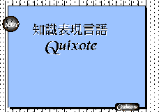

<html>
<head>
<title> Slide No.1 </title>
</head>

<frameset rows="430,130">

<noframes>
<body>
<a href="GIF/slide1.GIF"></a>

<a href="AU/voice1.au">
	</a>[61K]<p>
<!--		-->
(以下の説明文の中の下線は、色を変えるためのもので選択できません。)
<hr>
<b> ICOT </b> で研究、開発致しました、
知識表現言語 <a href=""> <b> Quixote </b> </a> を
説明します。<p>
<!--		-->

<hr>
<a href="slide2.html" target="_top">次の OHP へ</a>
<br><br>
<a href="HomePage.html" target="_top">OHP の一覧へ</a>
</body>
</noframes>

<frame src="onlyslide1.html">
<frame src="buttonexpla1.html">

</frameset>

</html>
